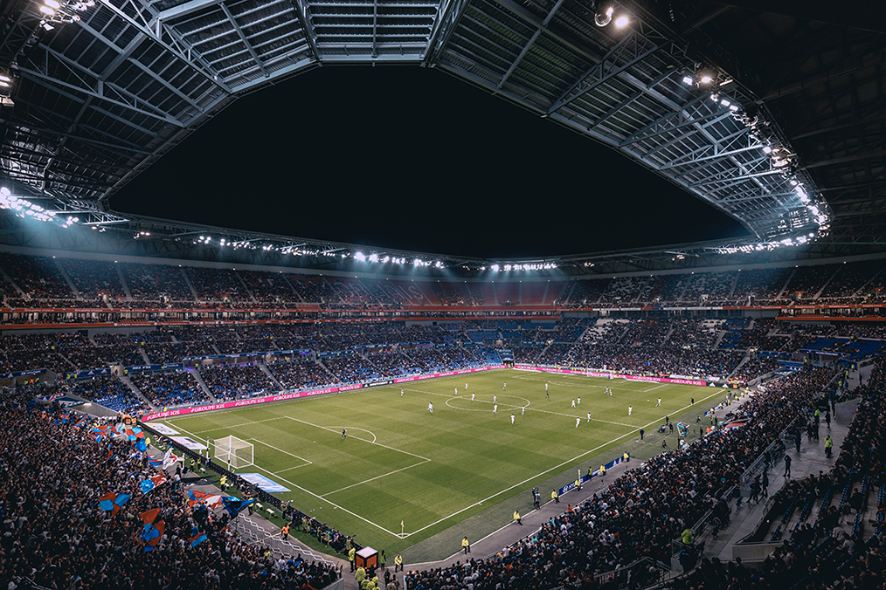

Melihat Standar Keamanan Stadion FIFA
Salah satu dari lima poin FIFA untuk membenahi persepakbolaan Indonesia Pasca Tragedi Kanjuruhan adalah membangun standar keamanan stadion.

INTERVIEW: Ketua Umum PSSI Mochamad Iriawan Jawab Soal Penggunaan Gas Air Mata di Dalam Stadion
Mochamad Iriawan juga berbicara soal pintu stadion yang terkunci sehingga menyebabkan banyak suporter tak bisa keluar setelah polisi melepaskan tembakan gas air mata ke tribun.

Rekor Bapuk Barcelona Lawan Bayern Munchen di 4 Laga Terakhir: Cetak Gol 2, Kebobolan 16
Bayern Munchen benar-benar menjadi momok menakutkan bagi Barcelona di kancah Liga Champions. Barca bak kehilangan taji setiap berduel melawan Die Roten.